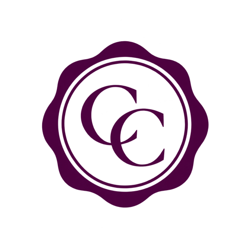

NOTAIO IN CERVINARA
CARMEN MARIA CASALE
Menu
☰
Home
Contatti
Ufficio di Cervinara (Sede)
Studio di Avellino (ufficio secondario)
Team
Titolo articolo 11
Inserisci sottotitolo
INSERISCI FOTO
Primo titolo
Inserisci la prima descrizione.
Secondo titolo
Inserisci la seconda descrizione.